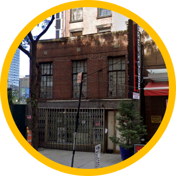

Paths to Power


28 Virginia Place, Crown Heights
Shirley Chisholm lived here in Brooklyn and became the first Black woman elected to the U.S. Congress in 1968, representing her home borough. She used her platform to advocate for civil rights, economic justice, and better housing and healthcare for her constituents in central Brooklyn.

Mae Mallory lived in Brooklyn during her work for school desegregation and housing rights in the 1950s and 1960s. She organized with parents and community leaders in Bedford-Stuyvesant, challenging the unequal education system and advocating for improved conditions in local schools.

Shirley graduated in 1942. She was vice president of the Junior Arista Honor City, rare as most Black girls were not steered into honors programs. She graduated with an academic diploma and a medal of excellence in French.
Shirley's husband Conrad Chisholm bought the building in 1972, the same year that Shirley ran for President, and converted it into an event space and club house called Club 1149. It was a meeting place for political clubs and speakers, and a social gathering space.